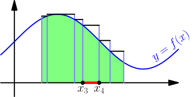
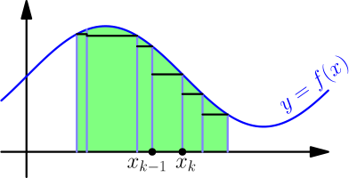
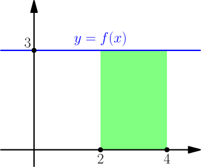
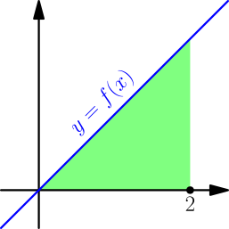
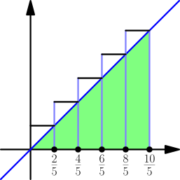
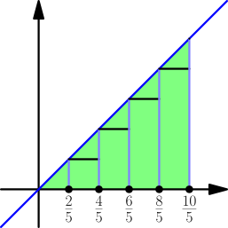
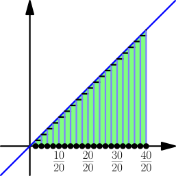
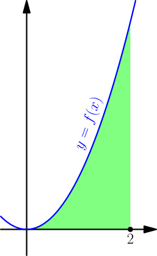
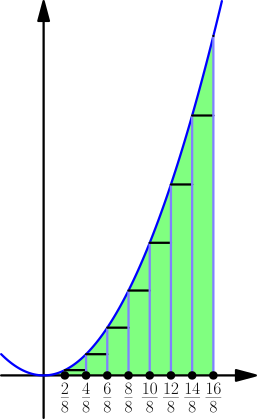

Definition of Integral¶
An integral of a function $f$ on an interval $[a,b]$ means the area under the graph of $f$ between $a$ and $b$. In the below picture, it is the area of the green part.
So far we haven't defined what exactly area means, and it hasn't bothered us too much. But for doing integrals, defining what exactly we mean with the "area" under a graph is worth the effort, so let's do that.
Partitions¶
Let's split the interval $[a,b]$ into $n$ smaller parts. In the below picture, we have $n = 6$.
This kind of splitting is called a partition of the interval $[a,b]$. Note that the first and last partition number $x_0 = a$ and $x_n = b$ are the ends of the interval $[a,b]$, and the partition numbers are strictly increasing. We can write these requirements as $$ a = x_0 < x_1 < x_2 < \dots < x_n = b. $$ The partition numbers don't need to split the partition into equally sized parts; the sizes may differ, like they do in the above picture.
Upper Sums and Lower Sums¶
Let's calculate the maximum value of $f$ on an interval of our partition and draw that with a line above the interval. Doing this for all intervals looks like this:

The $k$th interval is $[x_{k-1},x_k]$. For example:
- The first (leftmost) interval corresponds to $k=1$, and that is $[x_0,x_1]$.
- The last interval corresponds to $k=n$, and that is $[x_{n-1},x_n]$.
- The interval marked in the above picture is the 4th interval.
Drawing the upper sums like this creates rectangles, and we see that $$ \text{integral} \le \text{first rectangle area} + \text{second rectangle area} + \dots + \text{$n$th rectangle area}. $$ We can write the $k$th rectangle area as $$ (x_k-x_{k-1})\max_{[x_{k-1},x_k]} f, $$ where $\max f$ denotes the maximum of $f$ on the interval $[x_{k-1},x_k]$, and $x_k-x_{k-1}$ is the base of the rectangle. Rewriting the above result with this, we get $$ \text{integral} \le \underbrace{\sum_{k=1}^n (x_k-x_{k-1})\max_{[x_{k-1},x_k]} f}_{\text{upper sum}}, $$ where $\sum$ means sum; we calculate the stuff after $\sum$ for all $k$ between $1$ and $n$ (inclusive) and add the results. The sum of rectangle areas on the right is called the upper sum of $f$ with the partition $x_0,\dots,x_n$.
If we had used minimums instead, we would instead get a lower sum like this: $$ \text{integral} \ge \underbrace{\sum_{k=1}^n (x_k-x_{k-1})\min_{[x_{k-1},x_k]} f}_{\text{lower sum}}, $$ The picture for the lower sum looks like this:

By putting the results together, we get $$ \text{lower sum} \le \text{integral} \le \text{upper sum}, $$ and you might be able to see where this is going now; to find the value of the integral, we can squeeze it between upper sums and lower sums.
The minimums and maximums don't exist for all functions $f$, but they do exist if $f$ is continuous (TODO). For that reason, we assume that $f$ is continuous from now on.
Now we are ready to define what an integral means.
Suppose that a function $f$ is continuous on $[a,b]$. The integral of $f$ on $[a,b]$ means the only number satisfying $$ \text{lower sum} \le \text{integral} \le \text{upper sum} $$ for any lower sum and any upper sum of $f$ on $[a,b]$. We also write $$ \text{integral} = \int_a^b f(x)\ dx. $$
Above I used the same partition for lower sum and upper sum, but this definition doesn't demand that. In the next chapter, we'll show that there is always exactly one number that is between any lower sum and any upper sum.
In the above notation, $\int$ is known as the integral sign. The $f(x)\ dx$ part comes from how we multiply values of $f(x)$ (specifically minimums and maximums) with a difference of $x$ values (specifically $x_k - x_{k-1}$).
It's possible to do most of this for some discontinuous functions too. To help with that, the integral is usually defined with slightly more general things instead of min and max. This more general way to define an integral is known as a Riemann integral. If you want to know more about Riemann integrals, then you should go study math in a university.
Why???¶
This approach has several advantages over just defining the integral as area under a graph:
- We never defined what exactly area is, and this is easier than defining area properly.
- The lower sums and upper sums work even if the function $f$ has negative values and its graph (or a part of it) is below the $x$ axis. We don't need to special-case negative numbers when deriving something with upper sums and lower sums.
- Some things are easier to derive this way than with areas. See the $\int_0^1 x^2\ dx$ example below.
At this point, calculating integrals is ridulously difficult (see the examples below). Later we'll find a much easier way to do it.
Example: integral of 3¶
We calculate $$ \int_2^4 3\ dx. $$ Let $f(x) = 3$. Based on the below picture, the integral should be the rectangle area $(4-2) \cdot 3 = 6$.

We choose the partition $x_0,x_1,x_2$ with $x_0=2$, $x_1=3$ and $x_2=4$. With that we get $$ \begin{align} \text{upper sum} &= \sum_{k=1}^2 (x_k-x_{k-1}) \underbrace{\max_{[x_{k-1},x_k]}f}_3 \\ &= (x_1-x_0)3 + (x_2-x_1)3 \\ &= (3-2)3 + (4-3)3 = 3 + 3 = 6. \end{align} $$ In lower sum, we have $\min$ instead of $\max$, but the minimum is also 3, so the lower sum is also 6. Because $$ \text{lower sum} \le \text{integral} \le \text{upper sum}, $$ we have $$ 6 \le \int_2^4 3\ dx \le 6, $$ which means that $$ \int_2^4 3\ dx = 6. $$ We can also do this using a partition of just two numbers, $x_0=2$ and $x_1=4$. This gives $$ \begin{align} \text{upper sum} &= \sum_{k=1}^1 (x_k - x_{k-1})\max_{[x_{k-1},x_k]}f \\ &= (x_1-x_0) \cdot 3 = (4-2) \cdot 3, \end{align} $$ which is the area calculation in the beginning of this example.
Example: integral of $x$¶
We calculate $$ \int_0^2 x\ dx. $$ Let $f(x) = x$. Again, it's not very hard to get the right answer by just calculating an area.

We partition the interval $[0,2]$ into 5 equally sized parts. Because each parts has length $\frac{2}{5}$ (that is, interval length $2$ divided into $5$ equal pieces), the first two numbers of the partition will be $0$ and $\frac{2}{5}$. The number after those will be $\frac{2}{5}+\frac{2}{5}=\frac{4}{5}$. By continuing like this, we see that the partition we want is $$ x_0=\frac{0}{5}, ~ x_1=\frac{2}{5}, ~ x_2=\frac{4}{5}, ~ x_3=\frac{6}{5}, ~ x_4=\frac{8}{5}, ~ x_5=\frac{10}{5}. $$ The upper and lower sums look like this:


Now there is a lot of room between the upper and lower sums, certainly much more than one number. However, the upper and lower sums would be closer together with more than 5 parts, such as 20 parts below:

For this reason, we need to do this with $n$ parts and see what happens when $n$ is large. By essentially replacing $5$ with $n$ above, we get the partition $$ x_0=\frac{0}{n}, ~ x_1=\frac{2}{n}, ~ x_2=\frac{4}{n}, ~ \dots, ~ x_n=\frac{2n}{n}, $$ where we have $x_k = \frac{2k}{n}$ for all $k$. Because $f$ is strictly increasing, it gets its maximum value on an interval at the right endpoint of the interval and minimum value at the left endpoint. Specifically, $$ \max_{[x_{k-1},x_k]} f = f(x_k) = x_k \quad \text{and} \quad \min_{[x_{k-1},x_k]} f = f(x_{k-1}) = x_{k-1}. $$ With a sum formula, we now get $$ \begin{align} \text{upper sum} &= \sum_{k=1}^n \frac{2}{n} x_k = \sum_{k=1}^n \frac{2}{n} \frac{2k}{n} = \sum_{k=1}^n \frac{4}{n^2} k \\ &= \frac{4}{n^2}(1+2+\dots+n) = \frac{4}{n^2} \frac{n(n+1)}{2} = 2+\frac{2}{n} \end{align} $$ and $$ \begin{align} \text{lower sum} &= \sum_{k=1}^n \frac{2}{n} x_{k-1} = \sum_{k=1}^n \frac{2}{n} \frac{2(k-1)}{n} = \sum_{k=1}^n \frac{4}{n^2} (k-1) \\ &= \frac{4}{n^2}(0+1+2+\dots+(n-1)) = \frac{4}{n^2} \frac{(n-1)((n-1)+1)}{2} = 2-\frac{2}{n}. \end{align} $$ This means that $$ 2-\frac{2}{n} \le \int_0^2 x\ dx \le 2+\frac{2}{n}, $$ and because $$ \lim_{n \to \infty} \left( 2 \pm \frac{2}{n} \right) = 2, $$ the only way how that can work for all values of $n$ is $$ \int_0^2 x\ dx = 2. $$
Example: integral of $x^2$¶
We calculate $$ \int_0^2 x^2\ dx. $$ Unlike in the previous examples, we can't just calculate the area in the graph without an integral, because we don't have a formula for the area under a parabola. We finally have a reason for working with integrals.

Let $f(x) = x^2$. Just like in the previous example, we partition the interval $[0,2]$ into $n$ equally sized parts $x_0,x_1,\dots,x_n$ with $x_k = \frac{2k}{n}$. The upper and lower sums look like this for $n=8$:

Because $f$ is strictly increasing on the interval $\leftsquarebracket 0,2]$, we again have $$ \max_{[x_{k-1},x_k]} f = f(x_k) = x_k^2 \quad \text{and} \quad \min_{[x_{k-1},x_k]} f = f(x_{k-1}) = x_{k-1}^2. $$ With the sum of squares formula, we get $$ \begin{align} \text{upper sum} &= \sum_{k=1}^n \frac{2}{n} x_k^2 = \sum_{k=1}^n \frac{2}{n} \left( \frac{2k}{n} \right)^2 = \sum_{k=1}^n \frac{8}{n^3}k^2 \\ &= \frac{8}{n^3}(1^2+2^2+\dots+n^2) \\ &= \frac{8}{n^3}\frac{n(n+1)(2n+1)}{6} = \frac{8}{3}\left( 1+\frac{1}{n} \right)\left( 1+\frac{1}{2n} \right) \end{align} $$ and $$ \begin{align} \text{lower sum} &= \sum_{k=1}^n \frac{2}{n} x_{k-1}^2 = \sum_{k=1}^n \frac{2}{n} \left( \frac{2(k-1)}{n} \right)^2 = \sum_{k=1}^n \frac{8}{n^3}(k-1)^2 \\ &= \frac{8}{n^3}(0^2+1^2+2^2+\dots+(n-1)^2) \\ &= \frac{8}{n^3}\frac{(n-1)((n-1)+1)(2(n-1)+1)}{6} \\ &= \frac{8}{n^3}\frac{(n-1)n(2n-1)}{6} = \frac{8}{3}\left( 1-\frac{1}{n} \right)\left( 1-\frac{1}{2n} \right). \end{align} $$ This means that $$ \frac{8}{3}\left( 1-\frac{1}{n} \right)\left( 1-\frac{1}{2n} \right) \le \int_0^2 x^2\ dx \le \frac{8}{3}\left( 1+\frac{1}{n} \right)\left( 1+\frac{1}{2n} \right), $$ and because the limit of upper sum and lower sum is $\frac{8}{3}$, we must have $$ \int_0^2 x^2\ dx = \frac{8}{3}. $$